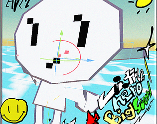

Go back

2D roguelike, inspired by games like Cave Story & Spelunky.
Itch
A game about a little hero with a big sword that slays wilches. | School project. Itch GitHubLittle Hero, Big Sword

A fangame based off of the Cave Story Beta.
SFGHQ
Short game made for the GMTK 2024 game jam.
Itch
GitHub
Short game made in pygame-ce.
Year 1 college semester art project - deconstructed game idea made in Godot.
Itch
GitHub
Year 1 college semester art project - absurd / awe-giving game idea made in Godot.
Itch
GitHub